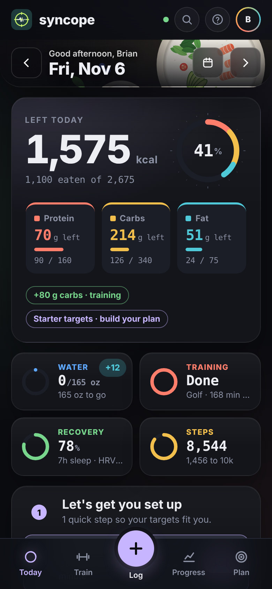
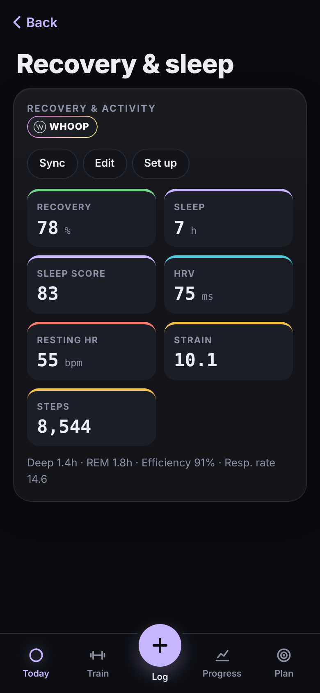
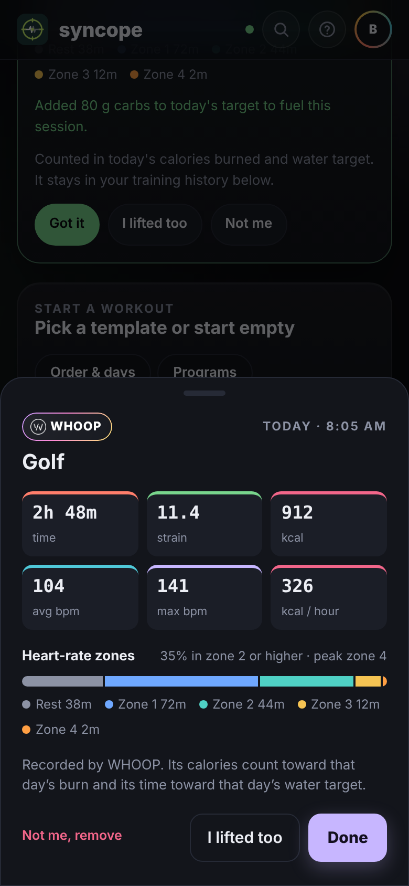

WHOOP integration overview
Product name not yet chosen. "Syncope" on the screenshots and in the URL is a temporary working name and will change before public launch.
This app is a free nutrition, training and hydration app for iPhone (installed from the web). Members connect WHOOP with OAuth from the app's Wearables page. The app reads recovery, sleep, cycles (strain), workouts, profile and body measurements to adjust each day's calorie, carb and water targets and show training sessions next to what the member ate.
- Recovery & sleep: recovery %, HRV, resting HR, sleep duration, sleep performance and stages.
- Strain and workouts: each WHOOP activity (lifting, golf, runs and others) shows time, strain, calories, heart-rate zones. Training days add carbs and water to that day's targets.
- Members stay in control: data is shown only to the member (and friends only if they opt in), never sold, never used for ads or sent to AI models. Disconnect deletes tokens and cached data. Privacy policy.
Screenshots from the live app with sample data.



Live app: brianmirandaa4-dotcom.github.io/macros